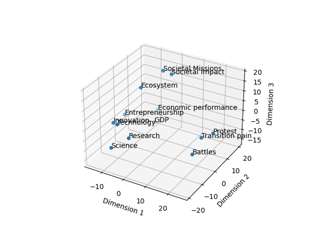
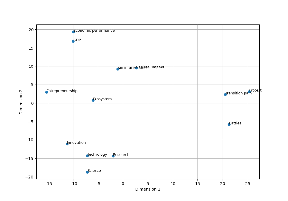
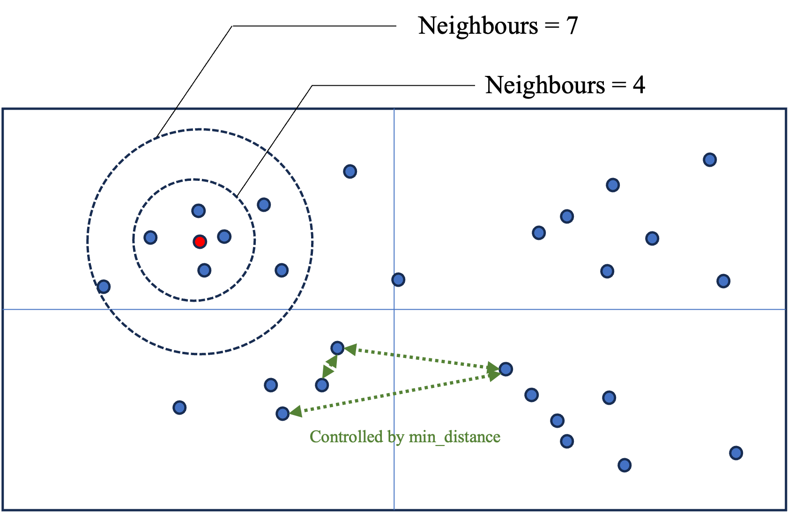

import pandas as pd
from bertopic import BERTopicCreate the model (details)
We start by loading required packages
Once the packages have loaded correctly we need to import some data. For the purpose of this workshop we will import a csv file, but you can technically import any data format that contains text. In the following line, replace the name of the file with yours. For simplicity, the data is stored at the root where python in running. For windows users this is the folder that has the same name as your login user name.
Step 1: Loading the data
data = pd.read_csv("CE_abstracts_text_lemm_prepped.csv", sep = ";")The input data for bertopic needs to have a specific format: it need to be a list. We therefore transform our dataframe into a list. In addition, we only need the column that has the text, in our case the “abstract” column.
# We first select only the column with the text:
data = data[['abstract']]
# We transform the dataframe into a list:
data = data.apply(lambda row: ' '.join(row.values.astype(str)),axis=1).tolist() Now that the data is in the right format we start with the setting of the parameters of the model.
Step 2: Creating the embeddings
First up are the embeddings we want to use for the data. Embeddings in text mining are representations of words or phrases in a numerical form. These numerical representations capture the semantic meaning of the words or phrases, allowing machines to understand and process text more effectively. Think of embeddings as a way to convert words into vectors of numbers, where similar words are represented by similar vectors. This enables algorithms to analyze, compare, and make predictions based on the meaning of the text rather than just the raw text itself. There are multiple ways to do this, some embeddings have specific purposes (models for patents for instance), others are more general, some focus on one language, others on multiple. In the following image from Bandyopadhyay et al. 2022 some words are positionned in space. The closer the words, the more proximity between them. What we download are basically the coordinates of the words in this space and replace each word with it’s coordinates. Doing this allows us to take into account the distance between the words rather than considering each word at the same distance from each other word.

For this tutorial we pick a small, low-weight embedding model to not waste too much time on computation. Other models are available, check Hugging Face for inspiration.
from sentence_transformers import SentenceTransformer
embed_model = SentenceTransformer("all-MiniLM-L6-V2")
Important
You choice in this step resides in the model of embeddings that you pick.
the embed_model object contains the coordinates for the documents in an n-dimensional space. The model we used has X dimensions and therefore our document have X-dimensional vectors. Clustering data with this many dimensions presents many issues, we therefore now move on to reduce the dimensions of these vectors.
Step 3: Dimension reduction
The high-dimensional embeddings can be quite complex and computationally expensive to cluster directly. In addition, there is a point at which additional dimensions only add marginal information and slow down the process more than they add value. UMAP helps by reducing the dimensionality of the embeddings. It maps the data into a lower-dimensional space (typically 2D or 3D for visualization purposes, but higher dimensions can be used for clustering), aiming to maintain the original data’s essential structure. Our data is usually of a lower dimension than that of the model. We therefore use a technique to reduce the dimension of the data. The Uniform Manifold Approximation and Projection (UMAP) technique is used for this.
For example, we can represent our words in a two-dimensional space based on our embeddings. This would look something like this:

The UMAP algorithm reduced the dimension of the data so that clustering algorithms can more efficiently identify clusters. Umap has many parameters that we can tweak to improve the results. The main parameters that we can play with are the following: (for a full explanation on this topic see this webiste):
| Parameter | Explanation |
|---|---|
| n_components | This specifies the number of dimensions to which the data should be reduced. For example, n_components = 5 means that UMAP will reduce the data to 5 dimensions. This is useful when you want to reduce dimensionality but retain more structure in multiple dimensions, which can be important for clustering algorithms that follow the dimensionality reduction. |
| n_neighbors | A larger value for n_neighbors encourages UMAP to take a broader view of the data structure, making it more focused on preserving the global data structure. Conversely, a smaller value makes UMAP focus more on local data structures. |
| min_dist | A smaller value of min_dist allows points to cluster more closely, which is useful for capturing fine-grained patterns or clusters in the data. Conversely, a larger value spreads points further apart, which can help in seeing the broader structure even if it might obscure some of the finer details. |
| metric | The distance metric used to measure the similarity between points in the high-dimensional space (cosine, euclidean) |
In the following figure we give an intuition for what these parameters do. The n_components defines the dimension of the space (2 in the figure). n_neighbors defines how far to search for points (represented by the circles). min_distance controls how closely we will search for points to reduce the dimension (green arrows), the higher the value, the further away we search, the broader the clusters and therefore, the topics.

from umap import UMAP
umap_model = UMAP(n_neighbors = 30, n_components = 5, min_dist = 0.0, metric = "cosine", random_state = 42)Step 4: Clustering
Once we have reduced the dimensions of the data, we need to cluster the documents together into topics. For this purpose the HDBSCAN algorithm is used.
| Parameter | Explanation |
|---|---|
| min_cluster_size | the minimum size of clusters that HDBSCAN will consider valid. If min_cluster_size = 7, we need at least 7 documents in a cluster to consider this to be a cluster |
| metric | This is the distance metric used to measure the similarity or distance between points in the feature space |
| cluster_selection_method | This parameter determines how clusters are selected from the hierarchical tree generated during the clustering process. The ‘eom’ method focuses on finding clusters that persist over a significant range of cluster stability (i.e., clusters that have a lot of “excess of mass”). This tends to result in selecting larger, more prominent clusters and is generally more robust to noise. The alternative is ‘leaf’, which would consider all possible clusters at the leaves of the tree, often resulting in a larger number of smaller clusters. |
| prediction_data | When set to True, this parameter instructs HDBSCAN to generate additional data about the cluster hierarchy and the soft clustering assignments, which can be used for predicting the cluster memberships of new, unseen data. This is particularly useful if you intend to use the clustering model as part of a production pipeline where new documents need to be automatically assigned to the existing clusters/topics identified during the initial clustering. |
from hdbscan import HDBSCAN
hdbscan_model = HDBSCAN(min_cluster_size = 7, metric = "euclidean", cluster_selection_method = 'eom', prediction_data = True)Step 5: Representations
Now that we have the clusters of documents, all that’s left to do is identify the words that best represent the clusters. This is done by a representation model, basically this means that we apply different text mining techniques to the text of the documents to only show the most salient terms.
In this step we chose different elements, mainly:
| Parameter | Explanation |
|---|---|
| stop_words | We don’t want any stopwords reperesenting our topics, we remove the stopwords for this reason. sklearn has build-in dictionaries per language. We set this option to “english” to remove english stop words |
| min_df | Stands for “Minimum document frequency”. It represents the minimum number of documents in which the term should appear. When a float is given, it will be interpreted as the proportion of documents |
| ngram_range | How many tokens a word can have (1 = “fuel”, 2 = “fuel cell”, 3 = “fuel cell system”). We provide this information as a range. If we want tokens of size 2 exclusively, we provide (2,2), if we want words between 1 and 3 tokens, we provide (1,3) |
| MaximalMarginalRelevance | The goal of MMR is to select documents or pieces of information that are both relevant to a query and diverse from each other, thereby reducing redundancy in the results presented to a user. λ is a parameter (ranging from 0 to 1) that controls the balance between relevance and diversity. A higher λ gives more weight to relevance, while a lower λ emphasizes diversity. |
from sklearn.feature_extraction.text import CountVectorizer
vect_model = CountVectorizer(stop_words = "english", min_df = 2, ngram_range = (1,1))
from bertopic.representation import KeyBERTInspired, MaximalMarginalRelevance, PartOfSpeech
import spacy
keybert_model = KeyBERTInspired()
mmr_model = MaximalMarginalRelevance(diversity = 0.3)Using this we create the representation model:
representation_model = {
"keyBERT": keybert_model,
"MMR": mmr_model,
# "POS": pos_model
}The final Bert model is the the group of all the provided models:
# regroup all the models into one
topic_model = BERTopic(
embedding_model = embed_model,
umap_model = umap_model,
hdbscan_model = hdbscan_model,
vectorizer_model = vect_model,
representation_model = representation_model,
top_n_words = 20, # how many words to include in the representation
verbose = True, # this options ensures that the function returns some info while running
calculate_probabilities = True
)By default, each document is assigned to one topic. However, base on the text analysis of the topics, each document can get a probability distribution for all the topics. If you prefer to have probabilities for each document to be assigned to each topic, add the calculate_probabilities = True option to the model.
You are now ready to run the model!